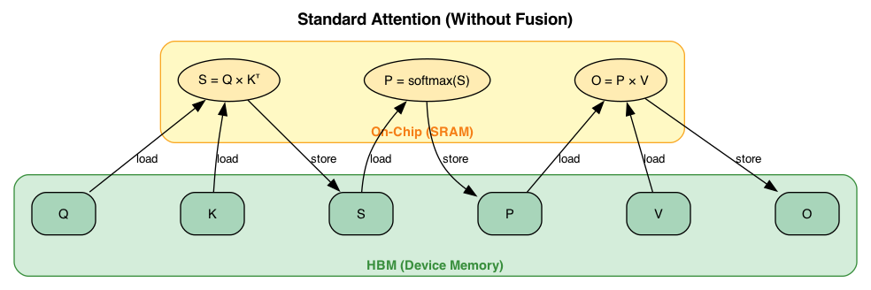
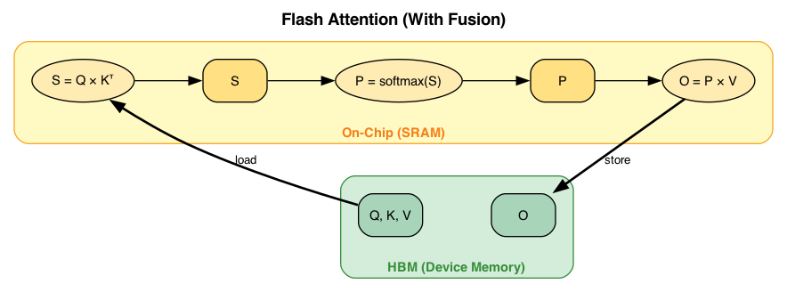

Overview of System Kernels: CUDA, Triton, and NKI #
In Section 1.2 we followed a model down through the software stack: framework code is captured into a graph, lowered through a tensor-level IR, and eventually turned into the kernels that actually run on a device. In Section 1.1 we saw what those devices look like underneath — GPUs, TPUs, and AWS Trainium all combine specialized matrix-multiply units, other compute engines, and an explicitly-managed on-chip memory hierarchy fed from off-chip HBM. This section connects the two views by looking closely at the layer where those pictures meet: the kernel, and the languages we use to write kernels by hand.
What a kernel is, and where it sits #
A kernel is the low-level function that actually executes an operator on a device. When PyTorch dispatches an ATen operator such as aten::relu or aten::matmul (Section 1.2), the thing on the other side of that dispatch — the code that runs on the CUDA cores of an SM, on a TPU’s MXU, or on a Trainium NeuronCore — is a kernel. Often, an end user may not need to write a kernel. They write hardware-agnostic framework code (PyTorch, JAX, HuggingFace Transformers), and a compiler stack lowers it: torch.compile() fuses regular subgraphs into generated Triton kernels and routes big GEMMs to vendor libraries, while XLA compiles a whole HLO graph for a TPU or Trainium backend.
That automatic path covers the common case very well. But as Section 1.2 emphasized, ML workloads have a long tail: fused GEMM epilogues, FlashAttention-style online softmax, mixture-of-experts routing, quantized/heterogeneous fusion, and accelerator-specific data movement — patterns where general-purpose fusion does not find a good schedule. It also covers only the hardware it has been taught about; a brand-new accelerator has no mature compiler behind it on day one. For both the long tail and new hardware, engineers drop below the framework and write kernels directly in a kernel language. Moreover, if one aims to extract peak performance from a chip, programming at the kernel-level is deemed necessary.
There is no single kernel language, and there never was going to be one. CPUs enjoy a relatively stable ISA boundary (x86, Arm, RISC-V), but AI accelerators do not: the software is a moving target (MLPs → CNNs → LLMs → ?), the hardware is a moving target (e.g. Ampere → Hopper → Blackwell), and HW/SW co-design (quantization, sparsity, new datatypes) keeps blurring the boundary. The result is a many-to-many mapping problem — several sources and several targets — where high-level languages and frameworks (C/C++, Python, PyTorch, JAX, and others) must be lowered onto a zoo of low-level, hardware-specific interfaces.
Each backend tends to bring its own DSL — CUDA and Triton for NVIDIA GPUs, NKI for Trainium, TPC-C for Intel Gaudi, the Gemmini ISA for an academic accelerator, and vector extensions like AVX (Intel CPUs) and RVV (RISC-V Vector) for CPUs. This fragmentation is exactly why portability across backends is hard, and it is the reason a kernel author has to understand not just an operator’s math but the specific hardware it will run on. The rest of this section walks through three representative points on this landscape — CUDA, Triton, and NKI — and then places them on a common spectrum.
Why hand-written kernels matter: the memory wall #
Before we look at the languages themselves, it is worth being precise about what the long tail is fighting for. The naive intuition is that an accelerator’s job is to do arithmetic, and that a faster chip is one that does more FLOPs per second. But on real deep-learning workloads the binding constraint is usually not compute at all — it is moving data. This is the memory wall: over the past two decades, compute throughput has scaled far faster than memory bandwidth, so a modern accelerator can finish the arithmetic for an operator long before its inputs and outputs have finished travelling to and from off-chip memory. Many operators — especially the small-batch, low-reuse ones that dominate LLM decoding — are therefore memory-bound: the compute engines sit idle waiting for HBM, and the kernel’s real cost is bytes moved, not FLOPs computed.
The tool that makes this quantitative is arithmetic intensity: the ratio of useful work to data traffic,
$$\text{AI} = \frac{\text{FLOPs performed}}{\text{bytes transferred to/from memory}} \quad (\text{FLOPs/byte}).$$
Whether an operator is memory-bound or compute-bound is decided by comparing its arithmetic intensity against a single property of the hardware, the roofline ridge point — peak compute divided by peak bandwidth:
$$\text{ridge point} = \frac{\text{peak compute (FLOPs/s)}}{\text{peak bandwidth (bytes/s)}} \quad (\text{FLOPs/byte}).$$
An operator whose arithmetic intensity falls below the ridge point cannot possibly saturate the compute units — it will run out of bandwidth first, and it is memory-bound; above the ridge point, it is compute-bound. As an example, an operator may have to do on the order of $\sim$200 floating-point operations for every byte it reads or writes just to keep that core’s matrix unit busy — a bar that elementwise, normalization, and attention-style ops fall well short of. This is the same memory pyramid from Section 1.1 viewed through a performance lens: on-chip SRAM (the Trainium SBUF/PSUM, a GPU’s shared memory) offers roughly an order of magnitude more bandwidth than HBM but holds only tens of MB, so the entire game is keeping the working set high in the pyramid and off the slow HBM tier.
Kernel fusion is the single most important lever for doing exactly that, and it is the central payoff of writing kernels by hand. Consider the unfused way a framework executes a chain of operators. Each op independently (1) reads its inputs from HBM into on-chip memory, (2) computes, and (3) writes its output back to HBM — so every intermediate result is spilled to HBM by the op that produces it and immediately refilled by the op that consumes it. For a chain of $k$ operators over $n$ bytes of data, that is roughly $2kn$ bytes of HBM traffic. Fusion combines the whole chain into one kernel: load the inputs once, keep every intermediate resident in on-chip SRAM, and write only the final result back — roughly $2n$ bytes, a $k$-fold reduction in the traffic that the memory wall makes precious. Take $y = \text{GELU}(Wx + b)$: unfused, it is three kernels (a matmul, a bias add, and an activation), each round-tripping its intermediates through HBM; fused, it is one kernel that computes $z = Wx + b$ and $y = \text{GELU}(z)$ while $z$ never leaves SBUF, paying for just one refill and one spill. A richer example is attention, whose large intermediates make the HBM round-trips even more punishing:

Standard, unfused attention: each step ($S = QK^\top$, $P = \text{softmax}(S)$, $O = PV$) reads its inputs from HBM and writes its outputs back, so every large intermediate makes an expensive HBM round-trip.
Fusion has one hard constraint: every intermediate the fused kernel keeps resident must actually fit in on-chip SRAM. When a chain’s intermediates are too large — as they are for attention over a long sequence — the escape hatch is tiling: partition the tensors into blocks small enough to fit on-chip, and apply fusion within each tile. Tiling only works when the computation is tileable, i.e. when each output tile depends only on input tiles that can be held on-chip together. That caveat is not a footnote; it is precisely where the interesting algorithmic work lives, and it is what the Flash Attention example at the end of this section is about. The broader point is the motivation for everything that follows: the long tail of operators is worth hand-writing kernels for because fusion and tiling — decisions a general-purpose compiler often cannot make on its own — are what turn a memory-bound operator into one that keeps the compute engines fed.
CUDA #
CUDA is NVIDIA’s C++-based programming model for its GPUs. A CUDA kernel is written in the SIMT (Single Instruction, Multiple Threads) style: the programmer writes the code for a single thread, and then launches a large grid of threads that all run that same code over different data. Following the hardware hierarchy from Section 1.1, threads are grouped into warps (32 threads executing in lockstep), warps into thread blocks (CTAs) that share an SM’s on-chip shared memory, and blocks into a grid. The programmer is responsible for mapping work onto this hierarchy and for explicitly managing the memory hierarchy — deciding what lives in registers, staging reused data into software-managed shared memory, and coalescing global-memory (HBM) accesses so a warp’s loads hit contiguous addresses.
A minimal element-wise kernel shows the shape of the model: one thread computes one output element, and the host launches enough blocks to cover the array.
// Device code: each thread computes one element of C = A + B.
__global__ void vec_add(const float* A, const float* B, float* C, int n) {
int i = blockIdx.x * blockDim.x + threadIdx.x; // global thread index
if (i < n) { // guard the tail
C[i] = A[i] + B[i];
}
}
// Host code: launch ceil(n / 256) blocks of 256 threads.
int threads = 256;
int blocks = (n + threads - 1) / threads;
vec_add<<<blocks, threads>>>(dA, dB, dC, n);
It is worth reading this snippet closely, because its handful of tokens is where the SIMT model becomes concrete. Taking the syntax in turn:
__global__marksvec_addas a kernel: a function that runs on the GPU but is launched from the CPU (its siblings are__device__, GPU-only, and__host__, CPU-only). A__global__function must returnvoid— a kernel communicates only by writing to memory.- The parameters are device pointers into global memory (HBM):
dA,dB,dCwere allocated on the device and populated by a host→device copy, so they are not the CPU’s arrays.nis a scalar passed by value to every thread. TheconstonAandBmarks them as the inputs:const float*means a pointer tofloats the kernel may read but not write (A[i]only ever appears on the right-hand side), whereasCis the mutable output. This is a convention rather than a requirement — the kernel would compile without it — but it is worth doing: the compiler enforces the read-only promise (an accidentalA[i] = …becomes a compile error rather than a silently corrupted input, which matters when thousands of threads share these arrays), and knowing an input is read-only lets it reason about aliasing and route the loads through the GPU’s read-only data cache. Serious kernels often go further and writeconst float* __restrict__to also assert that the pointers do not overlap; we keep it to plainconsthere for readability. vec_add<<<blocks, threads>>>(...)is the launch configuration, CUDA’s one piece of non-C++ syntax: it launches a grid ofblocksthread blocks, each ofthreadsthreads, and every one of thoseblocks × threadsthreads runs the same kernel body. The launch is asynchronous — control returns to the CPU while the GPU works.- The built-in variables let each thread ask “who am I?”:
threadIdx.xis its index within its block,blockIdx.xis its block’s index within the grid, andblockDim.xis the block size (the.xis because grids and blocks may be up to 3-D; this kernel uses only one dimension). int i = blockIdx.x * blockDim.x + threadIdx.xis the idiom at the heart of nearly every CUDA kernel: it flattens the (block, thread) pair into a single global index, so block 0 owns elements 0–255, block 1 owns 256–511, and so on. This is how each thread decides which element it is responsible for.if (i < n)is the tail guard. Becauseblocksis the ceiling⌈n/256⌉, the last block usually has more threads than there are elements left; threads withi ≥ nmust do nothing, or they would read and write out of bounds.
Notice what is not there: any loop over the array. A serial for (i = 0; i < n; i++) C[i] = A[i] + B[i] has become a grid of threads, one per iteration — the parallelism replaces the loop. This is the SIMT realization in miniature, on three levels. First, the launch instantiates the thread hierarchy: blocks × 256 threads, identical in code but differing in blockIdx/threadIdx and therefore in the i they compute, so identical code touches different data. Second, the hardware groups each block’s 256 threads into warps of 32 and runs a warp in lockstep — it fetches one instruction (load A[i], load B[i], add, store C[i]) and issues it to all 32 lanes at once, each operating on its own i; that shared instruction stream is the “single instruction” of SIMT. Third, the blocks are scheduled independently onto SMs, as many concurrently as fit, which is what lets the same kernel scale unchanged across GPUs of different sizes.
This example is deliberately the “hello world” of SIMT, and it stays clean on two fronts that real kernels must fight. Its only branch, if (i < n), is false only for the few overshoot threads in the last warp, so there is essentially no warp divergence — no warp is forced to run both sides of a branch and serialize them. And because thread i reads A[i], the 32 threads of a warp read 32 contiguous floats, which the hardware satisfies in a single coalesced memory transaction; a scattered access pattern (say, A[i * 17]) would do the same arithmetic while multiplying the memory traffic, exactly the memory-wall concern from above.
Real performance kernels are far more involved: to feed the Tensor Cores (the matrix-multiply-accumulate units) at peak throughput, a GEMM kernel must carefully tile the problem, stage tiles through shared memory, and overlap the loading of the next tile with the computation on the current one (double-buffering). CUDA code compiles with nvcc through PTX, NVIDIA’s portable virtual ISA, down to SASS, the architecture-specific machine code executed by the SMs (see Section 1.2). This gives CUDA maximal control and access to peak performance — it is where hand-tuned GEMM and attention kernels live, often via the CUTLASS template library — at the cost of being verbose, low-level, and specific to a particular GPU generation.
Triton #
Triton is an open-source, Python-embedded language and compiler for GPU kernels that raises the level of abstraction. Instead of writing per-thread scalar code, the programmer reasons about tiles (blocks) of elements: a Triton program describes what one block of the computation does, using array-style operations over that block. The compiler then handles many of the intra-block details that a CUDA author does by hand — memory coalescing, shared-memory allocation, and scheduling of work within an SM. The same element-wise example is written in terms of a block of BLOCK_SIZE elements:
import triton
import triton.language as tl
@triton.jit
def add_kernel(x_ptr, y_ptr, out_ptr, n_elements, BLOCK_SIZE: tl.constexpr):
pid = tl.program_id(axis=0) # which block am I?
offsets = pid * BLOCK_SIZE + tl.arange(0, BLOCK_SIZE)
mask = offsets < n_elements # guard the tail block
x = tl.load(x_ptr + offsets, mask=mask) # load a tile
y = tl.load(y_ptr + offsets, mask=mask)
tl.store(out_ptr + offsets, x + y, mask=mask) # store the tile
# One program instance per BLOCK_SIZE-element tile.
grid = lambda meta: (triton.cdiv(n_elements, meta["BLOCK_SIZE"]),)
add_kernel[grid](x, y, out, n_elements, BLOCK_SIZE=1024)
It is instructive to read this against the CUDA version, because the two solve the same problem at different levels of abstraction. Taking the syntax in turn:
@triton.jitmarksadd_kernelas a Triton kernel and hands its body to the Triton compiler, which just-in-time compiles it to GPU code the first time it runs. The body is written in a restricted subset of Python operating on Triton values, not ordinary Python that executes eagerly.- The parameters are raw pointers into global memory (
x_ptr,y_ptr,out_ptr), a scalarn_elements, andBLOCK_SIZE. TheBLOCK_SIZE: tl.constexprannotation marks it a compile-time constant: Triton specializes (and can autotune) the kernel for each concrete block size, which lets the compiler unroll and allocate registers around a known tile length. pid = tl.program_id(axis=0)is Triton’s analogue ofblockIdx: it identifies which program instance this is. The crucial difference from CUDA is the unit of a program instance — not one thread, but one tile ofBLOCK_SIZEelements. There is nothreadIdxhere at all.offsets = pid * BLOCK_SIZE + tl.arange(0, BLOCK_SIZE)computes, in one shot, the vector of element indices this instance owns — e.g. instance 0 owns[0, 1, …, 1023], instance 1 owns[1024, …, 2047].offsetsis a length-BLOCK_SIZEarray, and the arithmetic that follows is array-at-a-time, not scalar.mask = offsets < n_elementsis the tile-level tail guard. Because array lengths are rarely a multiple ofBLOCK_SIZE, the final tile overshoots the array: withn_elements = 3000andBLOCK_SIZE = 1024the grid has $\lceil 3000/1024 \rceil = 3$ tiles, and tile 2 ownsoffsets = [2048, …, 3071]even though valid indices stop at 2999. Comparing the wholeoffsetsvector againstn_elementselementwise yields a boolean vector —truefor the 952 in-bounds lanes,falsefor the 72 that run past the end — which thetl.load/tl.storethen honor, so the overshooting lanes are neither read nor written and never touch out-of-bounds memory. (For the earlier, full tiles every lane is in-bounds, so the mask is all-trueand does nothing.) This plays the role of CUDA’sif (i < n), but note the difference in mechanism: CUDA’s is a scalar branch that one thread either takes or skips, whereas the mask is a per-lane predicate — every lane runs the same load/store instruction and the mask merely gates which lanes commit. That predication is deliberately more SIMT-friendly: a data-dependent branch that splits a warp forces the hardware to run both paths (warp divergence), while a masked instruction keeps all 32 lanes on one instruction stream and simply suppresses the inactive ones.tl.load(x_ptr + offsets, mask=mask)gathers the whole tile from HBM into on-chip storage in one call, reading only the masked-in lanes;x + yadds two tiles elementwise; andtl.store(out_ptr + offsets, x + y, mask=mask)writes the result tile back, again honoring the mask.- The launch differs too.
grid = lambda meta: (triton.cdiv(n_elements, meta["BLOCK_SIZE"]),)computes how many tiles (program instances) are needed — the ceiling⌈n / BLOCK_SIZE⌉— andadd_kernel[grid](...)launches that grid. Triton’s grid counts tiles, whereas CUDA’s<<<blocks, threads>>>counted blocks and the threads inside them.
The heart of the contrast is where the SIMT hierarchy went. In CUDA you wrote the code for one thread and reasoned explicitly about warps of 32 and coalesced access; in Triton you write the code for one tile, and the compiler is responsible for turning that tile program into threads — deciding how to map the BLOCK_SIZE lanes onto a warp (or several), how to coalesce the tl.load, where to place data in shared memory, and how to schedule the work within an SM. The SIMT machinery has not gone away; it has been pushed below the language, so that offsets, mask, and the array-valued tl.load/tl.store express what each tile does while the compiler chooses how the threads carry it out.
Because the block, rather than the thread, is the unit of programming, Triton has a substantially lower barrier to entry than CUDA, and it is productive precisely where the work is elementwise, reduction-heavy, fused, or layout-bound — fused RMSNorm, activation chains, packing/unpacking, and layout transforms. It is also the primary code-generation target of PyTorch’s TorchInductor: when torch.compile() fuses a subgraph, it usually emits a Triton kernel. Triton lowers through its own Triton IR → LLVM IR → PTX → SASS (Section 1.2). The trade-off is that ceding intra-block scheduling to the compiler can leave performance on the table for the hardest primitives; for peak GEMM and some attention variants, hand-written CUDA, CUTLASS, or cuBLASLt can still win.
NKI (Neuron Kernel Interface) #
NKI (pronounced “Nicki”) is AWS’s Python-embedded kernel DSL for Trainium, part of the Neuron SDK. Like Triton it is tile-based, but it exposes the Trainium architecture from Section 1.1 much more directly. A NKI kernel operates on tiles staged in the on-chip SBUF scratchpad and PSUM accumulator, moved to and from off-chip HBM explicitly, and it maps operations onto the NeuronCore’s specialized engines: the Tensor Engine (the systolic array, for matrix multiplies and transposes), the Vector Engine (reductions and elementwise ops), the Scalar Engine (activation functions), and the GPSIMD Engine. Because the systolic array is organized around 128 rows, NKI tiling is centered on a 128-partition granularity: the first (partition) axis of a tile is at most 128, and kernels are written to march over the data in units of 128. The representative API mirrors this structure:
nl.load/nl.store— move tiles between HBM and SBUF.nisa.nc_matmul— matrix multiply on the Tensor Engine.nisa.tensor_reduce— reductions on the Vector Engine.nisa.activation— activation functions on the Scalar Engine.nl.*language ops (add,multiply,exp,max,copy, …) — elementwise/vector work, dispatched to the appropriate engine.
A minimal element-wise add makes the explicit HBM ↔ SBUF movement visible:
import nki
import nki.language as nl
@nki.jit
def add_kernel(a, b):
# Output tensor allocated in off-chip HBM.
out = nl.ndarray(a.shape, dtype=a.dtype, buffer=nl.shared_hbm)
# Tile indices; the partition (first) axis is at most 128.
i_p = nl.arange(a.shape[0])[:, None]
i_f = nl.arange(a.shape[1])[None, :]
a_tile = nl.load(a[i_p, i_f]) # HBM -> SBUF
b_tile = nl.load(b[i_p, i_f]) # HBM -> SBUF
c_tile = nl.add(a_tile, b_tile) # elementwise on-chip (Vector Engine)
nl.store(out[i_p, i_f], value=c_tile) # SBUF -> HBM
return out
A matmul kernel would instead nl.load the operand tiles into SBUF, issue nisa.nc_matmul so the Tensor Engine accumulates partial sums in PSUM, optionally apply nisa.activation on the Scalar Engine, and nl.store the result back to HBM. NKI sits below the automatic path: Trainium is normally reached through the XLA-based Neuron graph compiler (neuronx-cc, via torch-neuronx / jax-neuronx) from PyTorch or JAX, which traces and fuses the whole model graph for you (Section 1.2). NKI is the escape hatch for hand-writing high-performance kernels when that graph compiler leaves performance on the table.
In short, NKI pairs Triton’s surface with CUDA’s philosophy, on hardware unlike a GPU:
- Like Triton, it is a Python-embedded, JIT-compiled, tile-based DSL — you reason about array-valued tiles, never a scalar thread.
- More explicit than Triton, like CUDA, it makes you name what Triton leaves to the compiler: data is staged by hand in the named on-chip buffers (SBUF, PSUM) — there is no hardware cache to fall back on — and each op is pinned to a specific engine (
nisa.nc_matmul,nisa.tensor_reduce,nisa.activation). - Unlike both, it does not target the GPU’s SIMT model. A NeuronCore is a dataflow design with no warps, coalescing, or divergence; parallelism comes from the engines running concurrently and from pipelining DMA against compute, and the 128-partition tile shape is fixed by the systolic array rather than a tunable block size.
Synthesis: a control-versus-productivity spectrum #
These three languages are best understood as points on a single spectrum trading explicit control against productivity:
more control / more explicit ───────────────► more automation / more portable
┌───────────────┐ ┌────────────────────┐ ┌────────────────────┐
│ CUDA │ │ Triton · NKI │ │ XLA / graph │
│ (scalar SIMT,│ │ (tile-based DSLs, │ │ compilers │
│ hand-managed │ │ compiler fills in │ │ (whole-graph, you │
│ memory) │ │ many details) │ │ write no kernel) │
└───────────────┘ └────────────────────┘ └────────────────────┘
At one end, CUDA gives per-thread control over every register and shared-memory byte. In the middle, tile-based DSLs like Triton and NKI let you reason about blocks/tiles while the compiler handles lower-level bookkeeping (Triton hides intra-block scheduling; NKI still asks you to place tiles in SBUF/PSUM and pick engines, but frees you from thread-level detail). At the far end, whole-graph compilers like XLA ask you to write no kernel at all — you express the computation as a graph and the compiler owns the schedule. The right choice depends on how far a region falls into the long tail and how much the last increment of performance is worth.
| CUDA | Triton | NKI | |
|---|---|---|---|
| Host language | C++ | Python-embedded | Python-embedded |
| Primary target | NVIDIA GPUs | NVIDIA GPUs (others emerging) | AWS Trainium / Inferentia |
| Unit of programming | scalar thread (SIMT) | tile / block | tile (128 partitions) |
| On-chip memory | explicit: registers, shared memory | compiler-managed within a block | explicit: SBUF, PSUM |
| Compute mapping | manual: warps, blocks, Tensor Cores | automatic intra-block | explicit engines: Tensor / Vector / Scalar / GPSIMD |
| Lowering path | nvcc → PTX → SASS |
Triton IR → LLVM IR → PTX → SASS | Neuron compiler → Trainium executable |
| Sweet spot | peak GEMM/attention, full control | fused elementwise/reduction/layout | Trainium kernels beyond the graph compiler |
What is striking is how much these otherwise-different languages share. Beneath the syntax, every kernel language is organized around the same handful of ideas, all of which follow directly from the hardware picture in Section 1.1:
- Tiling / blocking: decompose a large tensor computation into fixed-size tiles (a CUDA thread block’s tile, a Triton
BLOCK_SIZE, a NKI 128-partition tile) that fit in fast on-chip memory. - Explicit use of the on-chip memory hierarchy: keep reused data in registers/shared memory (GPU) or SBUF/PSUM (Trainium), and minimize traffic to and from off-chip HBM.
- Mapping compute onto engines/threads: assign work to the right execution resource — CUDA cores vs. Tensor Cores on a GPU, or the Tensor/Vector/Scalar/GPSIMD engines on a NeuronCore.
- Overlapping computation with data movement: hide memory latency by prefetching the next tile while computing on the current one — double-buffering and software pipelining.
Mastering a new kernel language is therefore mostly a matter of re-expressing these same four concerns in that language’s vocabulary. That shared structure is what makes it feasible to reason across CUDA, Triton, and NKI at once — and, as later sections explore, what makes automated kernel generation a tractable target even across a fragmented landscape of backends.
Flash Attention: a fused kernel in practice #
Nothing ties these threads together — the memory wall, fusion, tiling, and the four shared concepts — better than Flash Attention, the fused attention kernel introduced by Dao et al. (2022). It is the poster child for why hand-written kernels matter, and it is exactly the “FlashAttention-style online softmax” entry in the long tail we named at the start of this section.
Recall standard attention: from queries, keys, and values we compute the score matrix $S = QK^\top$, normalize it with $P = \text{softmax}(S)$, and produce the output $O = PV$. The trouble is that $S$ is an $N \times N$ matrix in the sequence length $N$. At $N = 8192$ that is roughly 67 million elements per head — far larger than the tens of MB of on-chip SRAM — so the unfused implementation writes the full $S$ (and $P$) out to HBM and reads it back to finish the computation. Those round-trips make standard attention firmly memory-bound: its arithmetic intensity is only about $62$ FLOPs/byte at $N = 4096, d = 128$, well below the $\sim$200 ridge point from the memory-wall discussion above.
Fusion is the obvious cure, but softmax puts up a fusion blocker. Its denominator is a sum over an entire row of scores, and the numerically stable form subtracts each row’s maximum — so a naive implementation needs two passes over the whole row and appears to require all of $S$ to be materialized before any of $P$ can be produced. That is precisely the “not tileable” case that defeats fusion. The resolution is an algebraic one: online softmax reformulates the normalization to maintain running statistics — a running max $m$ and a running normalizer $l$ — and rescales the partial results as new blocks of scores stream in, computing the exact stable softmax in a single streaming pass. It is a mathematically equivalent rewrite, not an approximation, and it removes the blocker.
Flash Attention = online softmax + tiling. With the blocker gone, the kernel tiles over the sequence: it holds a block of $Q$ on-chip, streams in blocks of $K$ and $V$, computes each score block $S$ and its contribution to the output while keeping the running $(m, l, O)$ statistics resident in SRAM, and never materializes the full $S$ or $P$ in HBM. Only $Q$, $K$, $V$ (in) and $O$ (out) touch off-chip memory. The result is exact — bit-for-bit the same attention — while HBM traffic drops from $O(N^2)$ toward $\sim O(N^2 d^2 / M)$ (with $M$ the on-chip SRAM size) and the memory footprint falls from $O(N^2)$ to $O(Nd)$, which is what lets attention scale to long sequences at all.

Flash Attention (fused): $Q, K, V$ are refilled from HBM once, the intermediates $S$ and $P$ stay in on-chip SRAM (SBUF), and only the final output $O$ is spilled back to HBM.
Flash Attention maps cleanly onto the four shared concepts above: it tiles attention into $Q/K/V$ blocks; it makes explicit use of the on-chip memory hierarchy by keeping $S$, $P$, and the running $(m, l, O)$ in SRAM instead of HBM; it maps compute onto engines (the matmuls $QK^\top$ and $PV$ onto the matrix unit, the softmax rescaling onto the vector/scalar units); and a real implementation overlaps the load of the next $K/V$ block with the compute on the current one. It also makes the case for this entire tutorial: a general-purpose fusion compiler will not, on its own, discover the online-softmax algebra that makes fusing attention legal. That reformulation is human insight — exactly the kind of long-tail work that, today, still calls for a hand-written kernel.
Takeaways: the kernel as the target of this tutorial #
Everything above has described kernels from the human author’s side of the desk; the tutorial asks what changes when the author is an LLM. Its pillars fall straight out of the ideas here:
- The kernel is the output. It is the artifact the model is asked to emit — the one thing SFT on kernel corpora, RL post-training, and agentic iteration are all ultimately scored on.
- The long tail is the reason to automate. What the compiler leaves behind is scarce in experts and costly in engineer-hours — a residue worth automating, not a solved problem.
- The memory wall defines the reward. The arithmetic-intensity and roofline metrics above are the signal a hardware-aware RL reward must encode; being only a proxy, a careless one invites reward hacking — a kernel that games a latency or compile check without doing the operator’s real work.
- Fragmentation is the hard part, and shared structure is the way through. CUDA is nearly two decades deep in public code while a young DSL like NKI is genuinely low-resource — motivating data curation across heterogeneous targets and benchmarks that score kernels on unfamiliar hardware; the backend-independent core these languages share is what lets abundant data on one target inform generation on a starved one.
- Flash Attention marks the ceiling. The hardest cases are where inference-time reasoning and multi-turn, agentic refinement earn their place.
The rest of the tutorial takes these up in turn — teaching a model this vocabulary, rewarding kernels that are fast rather than merely plausible, and letting it reason and iterate its way into the long tail.
References #
- NVIDIA, CUDA C++ Programming Guide. https://docs.nvidia.com/cuda/cuda-c-programming-guide/
- NVIDIA, CUDA Compiler Driver NVCC. https://docs.nvidia.com/cuda/cuda-compiler-driver-nvcc/
- NVIDIA, Parallel Thread Execution (PTX) ISA. https://docs.nvidia.com/cuda/parallel-thread-execution/
- NVIDIA, CUTLASS: CUDA Templates for Linear Algebra Subroutines. https://github.com/NVIDIA/cutlass
- P. Tillet, H. T. Kung, and D. Cox, “Triton: An Intermediate Language and Compiler for Tiled Neural Network Computations,” MAPL 2019. https://doi.org/10.1145/3315508.3329973
- Triton, Triton Documentation (language reference and tutorials). https://triton-lang.org/
- PyTorch, TorchInductor and
torch.compile. https://pytorch.org/docs/stable/torch.compiler.html - AWS, Neuron Kernel Interface (NKI) Documentation. https://awsdocs-neuron.readthedocs-hosted.com/en/latest/general/nki/
- AWS, Trainium/Inferentia2 Architecture Guide for NKI (NeuronCore engines, SBUF/PSUM, 128 partitions). https://awsdocs-neuron.readthedocs-hosted.com/en/latest/nki/guides/architecture/trainium_inferentia2_arch.html
- T. Dao, D. Y. Fu, S. Ermon, A. Rudra, and C. Ré, “FlashAttention: Fast and Memory-Efficient Exact Attention with IO-Awareness,” NeurIPS 2022. https://arxiv.org/abs/2205.14135
- S. Williams, A. Waterman, and D. Patterson, “Roofline: An Insightful Visual Performance Model for Multicore Architectures,” Communications of the ACM, 2009. https://doi.org/10.1145/1498765.1498785
- AWS, Neuron Kernel Interface (NKI) Programming Guide. https://awsdocs-neuron.readthedocs-hosted.com/en/latest/general/nki/index.html
- R. Saha, A. Manocha, Y. Park, et al., Algorithms and Systems for Efficient Inference in Generative AI, AAAI 2026 Tutorial (source of the memory-wall / kernel-fusion framing and the attention-fusion figures). https://neuron-science.github.io/inference_optimization/
- C. Hong, S. Bhatia, A. Cheung, and Y. S. Shao, AI-Driven Accelerator Programming with LLMLift and Autocomp, ASPLOS 2026 Tutorial (source of the “lots of sources, lots of targets” framing and the CUDA / Triton / NKI overview). https://charleshong3.github.io/research/asplos2026-tutorial/